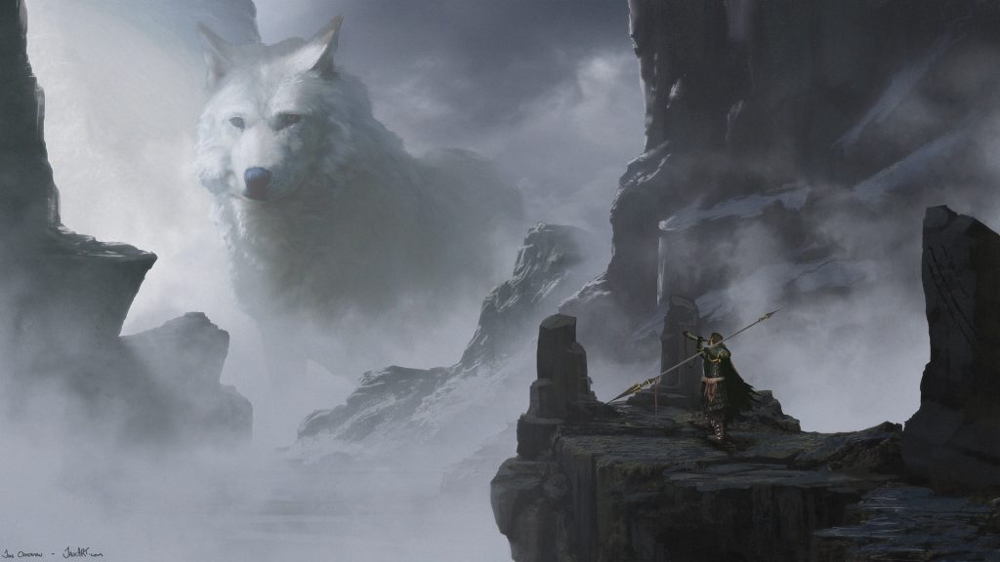
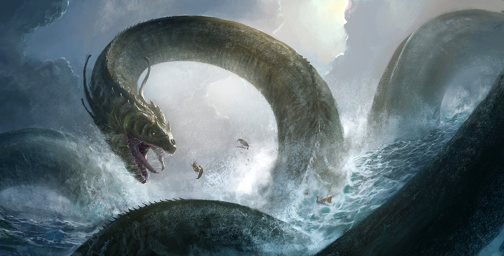

Семейное древо
Локи

Локи
Однажды у великана Фарбаути и богини Лаувейи родился рыжеволосый мальчик, которого назвали Локи. После рождения Локи, великан Фарбаути погиб и Лаувейя осталась одна с новорождённым ребёнком. Убитая горем мать подбросила Локи в Асгард, а сама рассталась с жизнью бросившись с утёса на скалы. Жители Асгарда приняли Локи и воспитали как своего. С каждым годом Локи становился умнее и коварнее. Мудрый Один знал, что эту силу можно использовать в своих целях и решился на обряд побратимства с сыном Лаувейи, чтобы всегда чувствовать связь с Локи и легко следить за ним.Большая часть скандинавских мифов связана с Локи. Бог коварства часто нарушает спокойствие и баланс между светом и тьмой. Локи устраивает неприятности другим богам, но сам же помогает их исправить.
Фенрир
Фенрир в скандинавской мифологии (др.-сканд. Fenrir) – огромный чудовищный волк. Он рождён от союза Локи с великаншей Ангрбодой. Фенрир является врагом богов, ему суждено стать убийцей Одина. Из-за пророчества о бедах, которые он принесёт, волка заточили под землёй. Его волшебные оковы так крепки, что Фенрир разорвёт их только перед концом света.
Ёрмунгард
Йормунганд или Ёрмунганд (на др.-сканд. Jörmungandr) – гигантский морской змей из скандинавской мифологии. Он столь огромен, что опоясывает своим телом всю Землю и кусает собственный хвост. Морской змей Ёрмунганд – сын бога Локи и великанши Ангрбоды. Его также называют змей Мидгарда или Мировой Змей, это один из персонажей, участвующий в гибели мира, Рагнарёке.
Хель
Хель — богиня мертвых и полновластная владычица Хельхейма, царства мертвых. Ее отцом был Локи, а матерью — великанша Ангрбода. Рожденная в Железном лесу, Хель была низвержена Одином в преисподнюю — в Нифльхейм. Скандинавская богиня олицетворяет собой смерть, которой все равно, кого забирать. Она не злая и не добрая, но в своем царстве она привечает абсолютно всех, кто погиб в бою.
Дети Локи от Ангрбоды
Помимо своей жены Сигюн, пьяница и распутник Локи, любил проводить время со старой великаншей Ангрбодой. Часто он покидал Асгард и уходил в Железный лес на окраине Ётунхейма — страны великанов.
После трех долгих ночей, проведенных с Локи, Ангрбода родила трех необычных детей. Девочку Хель, змея Ёрмунганда и маленького волчонка по имени Фенрир. Верховный бог Один знал, что дети Локи принесут с собой только зло и разрушения. Один приказал всем асам, во главе с Тором, доставить отпрысков из Железного леса в Асгард, чтобы самому решить их судьбу. Ведьмы предсказали всеотцу ,что немалую роль в Рагнарёке сыграют дети Локи.Мировой змей станет причиной гибели Тора, в то время как он сам будет убит волком Фенриром.
Дети Локи от Сигюн
Сигюн, иногда называемая Сигeнн или Cигрюн родила богу коварства двух сыновей. Их звали Вали и Нaрви. Вместе с ней Локи жил в Асгарде по разрешению асов, которые ценили мудрость и хитрость Локи.
Но затем на пиру у йотуна Эгира он разоблачил асов и асинь, а потом признался, что способствовал смерти Бальдра. После этого Локи приковали к трём камням под землёй. Там он находится до конца света (Рагнарёка). Сигюн была единственной, кто не оставил Локи. С тех пор она находится возле связанного мужа. У сыновей выдалась участь не лучше-они так же были наказаны за деяния отца.Вали был превращен в волка,а Нарви был убит.